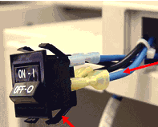

This procedure describes how to replace the instrument power supply when replacing a Magnetek power supply with a Cosel power supply.
Shut down the DxI instrument.
Select
Configure
> PC Admin > System Admin > Shutdown Instrument to exit the software in preparation for powering off the instrument.
Enter the password
Access2Support, and then select
OK.
At the pop-up
You must now turn off the instrument, using the instrument power switch, select
OK.
After the instrument software has shut down, turn off the instrument at the power switch.
Disconnect the instrument power cord from the rear of the instrument or from the wall outlet or UPS connection.
Remove the Magnatek power supply.
Open the lower right instrument door to expose the power supply.
Remove the cover plate on the power supply (five screws).
Warning: Ensure that the instrument power cord is disconnected.
Disconnect the power connector from the lower left corner of the power supply.
Disconnect the power outlet wires (brown and black) from the front of the mounted power supply (six screws).
Remove the power supply mounting screws (two screws, two key slots in the baseplate).
Remove the power supply from the instrument.
Remove the power conditioner module (instruments with Magnetek power supplies).
Remove the cover on the power conditioner (two screws).
Disconnect the two power connectors from the power conditioner.
Remove the front mounting screw from the power conditioner.
Slide the power conditioner partially out of the instrument. Remove the mounting screw for the green ground wire that is mounted on the left side of the power conditioner.
Remove the power conditioner from the instrument.
Replace the fan baffle.
Remove the fan baffle from the rear of the power supply compartment (two nuts and washers).
Install the new fan baffle from the Cosel power supply kit (two nuts and washers)
Note: When mounting the baffle, push the baffle up and to the right. The mounting holes in the baffle allow adjustments in the position of the baffle.
Route the blue and black AC power wires and the green ground wire that was removed from the power conditioner as shown in the Fan Baffle photo.
Remove the lower left rear panel from the instrument (five screws).
Note: The center rear panel (dark gray panel above this panel) must be removed to access the upper three screws.
Loosen the two mounting screws on the access plate, and then remove one of the screws to provide clearance for the power harness connector.
Disconnect the power harness from J3 on the power distribution PCB, and remove the power harness from the instrument.
Install the power supply.
Slide the power supply into the instrument and install the mounting screws (two screws, two key slots in the baseplate)
Remove the clear plastic cover, connect the green, black, and blue wires to the power supply (three screws), and then remount the cover.
Figure 171: Cosel power input wires
Remove and discard the blue and black power conditioner wires from the power switch then connect the blue and black wires from the Cosel power supply to the power switch.
Warning: Ensure that the instrument power cord has been disconnected.

Note:
ON -I should be oriented up.
The Blue wires should both be connected on the right side of the power switch.